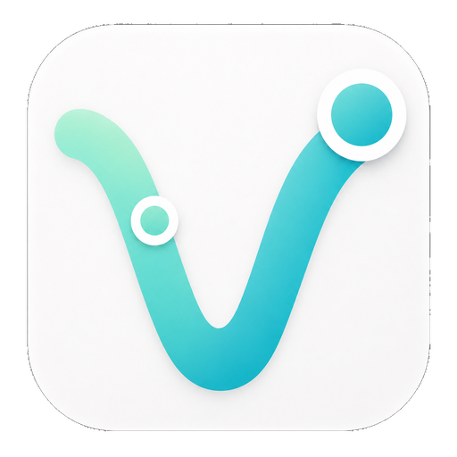

В приложении
- Откройте Vzaimno и войдите в аккаунт.
- Перейдите в раздел «Профиль».
- Откройте «Удалить данные и аккаунт».
- Отметьте категории данных и подтвердите удаление.

Vzaimno Запросить удалениеУправление данными
Эта страница описывает, как пользователь приложения Vzaimno может запросить полное удаление аккаунта и связанных с ним данных, даже если приложение уже удалено с устройства.
Если у вас нет доступа к приложению, отправьте запрос на murtazaevavazbek20@gmail.com. В письме укажите email или телефон аккаунта Vzaimno, чтобы мы могли подтвердить владение аккаунтом.
Минимальные технические записи могут сохраняться, если это необходимо для безопасности, предотвращения мошенничества, обработки споров или выполнения требований закона. Такие записи не используются для восстановления удалённого аккаунта.